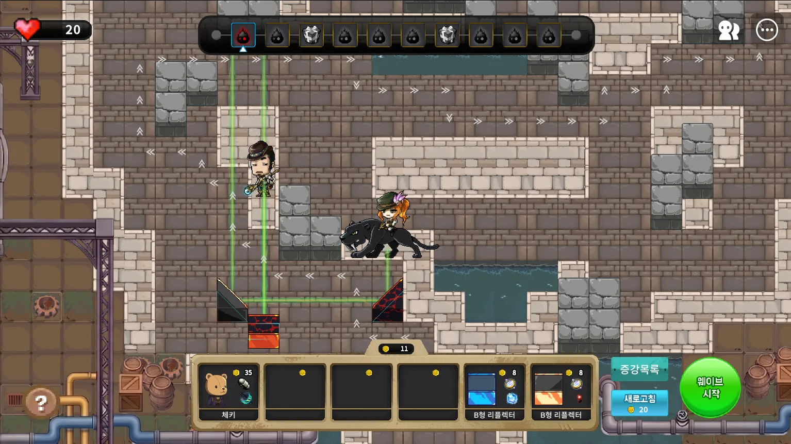
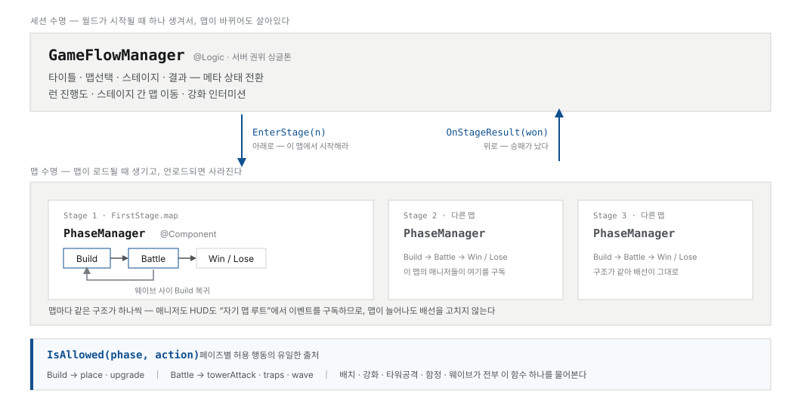
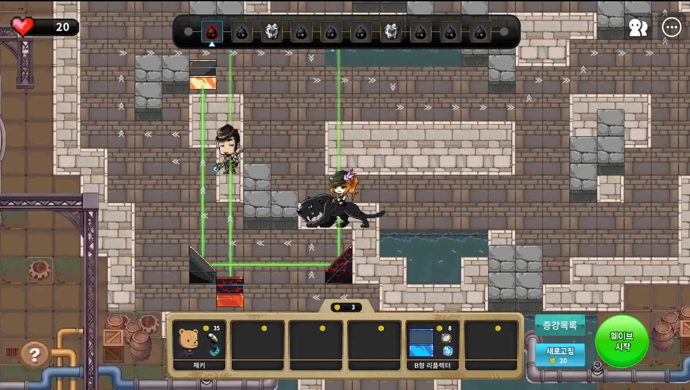
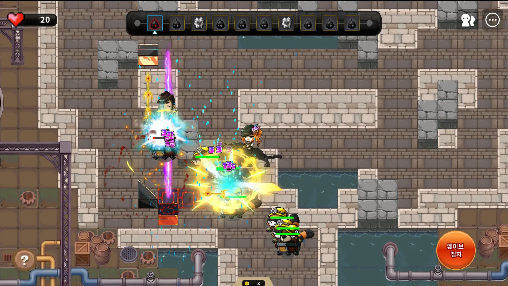
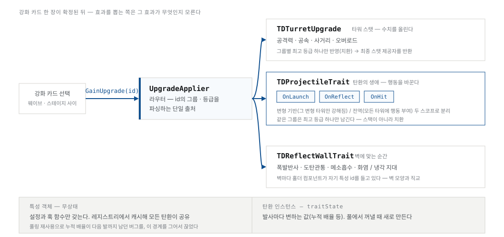
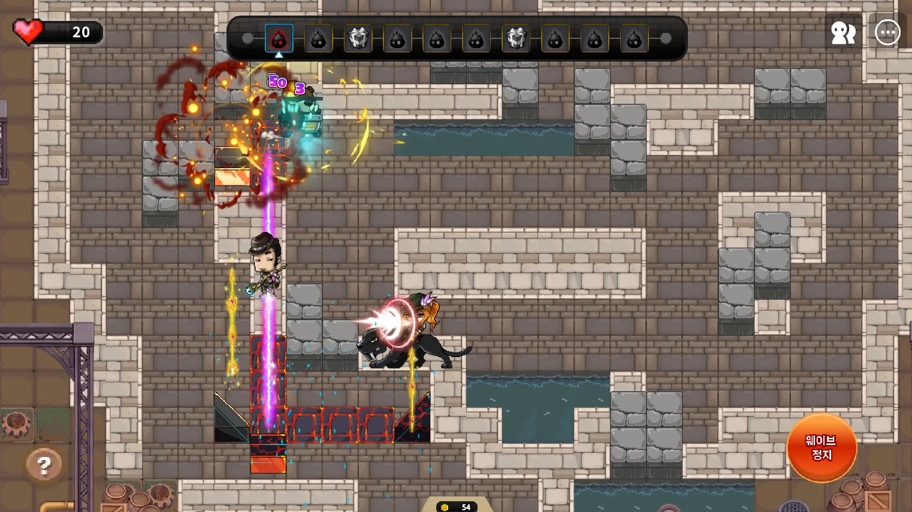
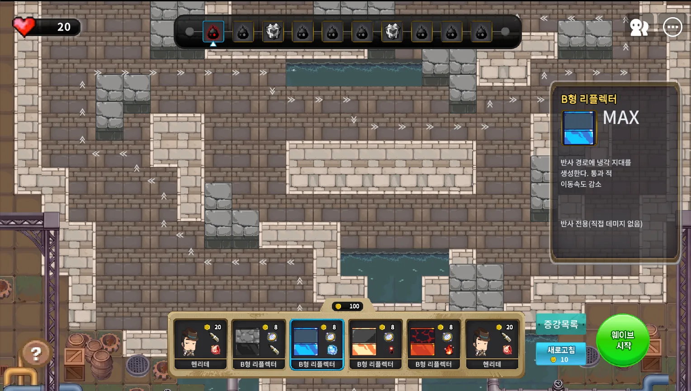
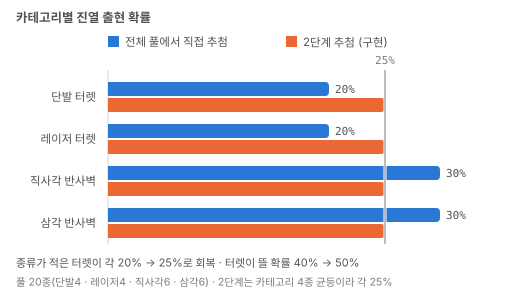
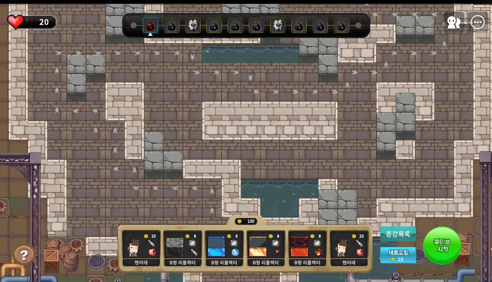
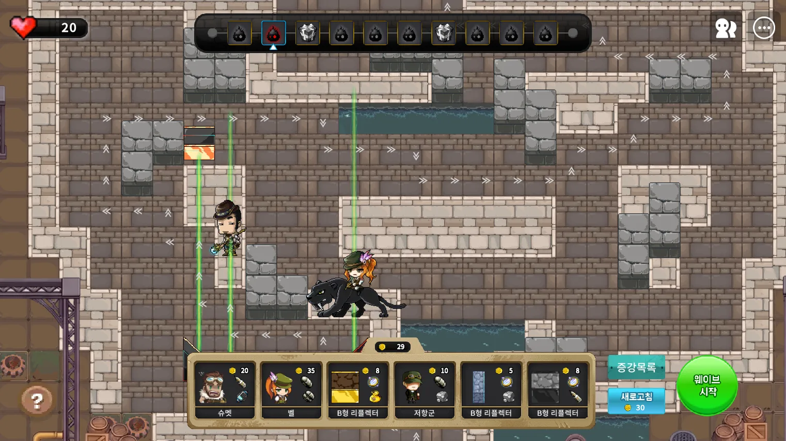

에델슈타인을 지켜라
레이저와 탄환을 반사벽에 튕겨 몰려오는 적을 막는 디펜스입니다. 벽마다 특성이 달라, 튕기는 순간 탄환의 성질이 바뀝니다.
- 장르
- 반사 디펜스
- 플랫폼 · 언어
- MapleStory Worlds · mLua
- 규모 · 기간
- 4인 팀 (개발 2 · 기획 1 · 아트 1) · 2026.07–08
- 담당
- 게임 플로우 · 강화 데이터 구조 · 상점
어떤 게임인가
준비 단계(Build)에 터렛과 반사벽을 배치하고, 전투 단계(Battle)에 웨이브가 들어옵니다. 터렛은 직선으로만 쏩니다. 각도를 만드는 것은 벽이고, 어디에 어떤 벽을 놓느냐가 곧 사거리이자 공격 경로가 됩니다.
제 담당은 게임 진행 상태 구조, 강화(수치·특성) 데이터 구조, 그리고 상점과 리롤입니다.
넥슨 패스트 트랙 해커톤 「2026 메커톤」 2회차에 참가해 만들었습니다. 기간이 짧아 구조를 먼저 세우고 콘텐츠를 얹는 순서로 갔습니다.

게임 플로우와 페이즈 — 상태를 두 층으로
맵이 바뀌어도 살아남아야 하는 상태와, 맵과 함께 사라져야 하는 상태를 분리했습니다.
구현
- 위층
GameFlowManager는 세션 내내 하나입니다(@Logic· 서버 권위 싱글톤). 타이틀 · 맵선택 · 스테이지 · 결과 같은 메타 상태와 런 진행도, 스테이지 간 맵 이동을 가집니다. - 아래층
PhaseManager는 맵마다 하나입니다(@Component). 맵이 로드될 때 생기고 언로드되면 사라지며, Build · Battle · Win/Lose를 돌립니다. 웨이브 사이에는 Build로 돌아옵니다. - 두 층은
EnterStage(n)과OnStageResult(won)한 쌍으로만 닿습니다. 아래로는 "이 맵에서 시작해라", 위로는 "승패가 났다" 둘뿐입니다. - 페이즈별로 무엇이 허용되는지는
IsAllowed(phase, action)한 곳에서만 답합니다. Build면 배치·강화, Battle이면 터렛 공격·함정·웨이브입니다. 호출부마다 조건문이 자라지 않습니다. - 매니저도 HUD도 자기 맵 루트에서 이벤트를 구독합니다. 그래서 맵이 늘어나도 배선을 고칠 일이 없습니다.

화면


성과
IsAllowed() 한 곳
맵을 늘려도 이벤트 배선을 고치지 않음
맵 언로드 시 페이즈 상태가 같이 사라져 잔존 상태 없음
강화 — 수치와 특성을 갈라 놓기
숫자만 오르는 강화와 행동이 바뀌는 강화는 다루는 방법이 달라야 했습니다.
구현
- 강화 카드가 확정되면 바깥에서 부르는 함수는
GainUpgrade(id)하나입니다. 카드를 뽑는 쪽은 그 효과가 무엇인지 몰라도 됩니다. UpgradeApplier가 라우터입니다. id의 그룹과 등급을 파싱하는 유일한 자리이고, 여기서 세 레지스트리 중 하나로 보냅니다.- 수치(
TDTurretUpgrade) — 공격력 · 공속 · 사거리 · 오버로드. 같은 그룹은 쌓지 않고 최고 등급 하나로 치환하고, 최종 스탯 제공자를 돌려줍니다. - 탄환 특성(
TDProjectileTrait) — 탄환의 생애에OnLaunch·OnReflect·OnHit세 훅으로 끼어듭니다. 그 변형 타워만 강해지는 것과 모든 타워에 행동을 주는 것을 두 스코프로 분리했습니다. - 벽 특성(
TDReflectWallTrait) — 폭발 반사 · 도탄 관통 · 메소 흡수 · 화염/냉각 지대. 벽마다 홀더 컴포넌트가 자기 특성 id를 들고 있어서 벽 모양과 특성이 서로 직교합니다. - 특성 객체는 무상태입니다. 설정과 훅 함수만 갖고 레지스트리에서 캐시해 모든 탄환이 공유하며,
발사마다 변하는 값은 탄환 인스턴스의
traitState에 둡니다.

화면


성과
GainUpgrade(id) 하나
id 파싱 지점이 라우터 한 곳
특성 추가가 레지스트리 등록으로 끝남 — 호출부 수정 없음
특성 객체가 무상태라 탄환마다 새로 만들지 않음
벽 모양과 특성이 직교 — 조합이 곱으로 늘어남
상점 — 종류가 적은 쪽이 묻히지 않게
풀에서 그냥 뽑으면 종류가 많은 반사벽이 상점을 덮습니다.
구현
- 진열 풀은 20종입니다 — 단발 터렛 4 · 레이저 터렛 4 · 직사각 반사벽 6 · 삼각 반사벽 6.
- 전체 풀에서 바로 뽑으면 종류 수가 그대로 확률이 됩니다. 터렛은 각 20%, 반사벽은 각 30%로 기울고 터렛이 뜰 확률이 40%에 그칩니다.
- 그래서 카테고리를 먼저 뽑고 그 안에서 종류를 뽑는 2단계 추첨으로 바꿨습니다. 네 카테고리가 각 25%가 되고, 터렛이 뜰 확률이 50%로 회복됩니다.
- 리롤은 누를 때마다 비용이 오릅니다. 비용 차감과 슬롯 소진 판정은 서버에서 검증하고 클라이언트는 요청만 보냅니다.

화면


성과
트러블슈팅
막혔던 지점을 문제 · 원인 · 해결 순으로 적었습니다.
어려움
기능 02 — 탄이 가끔 지형지물을 그냥 통과했습니다.
- 문제
- 지형지물은 탄환이 통과하지 못하게 해 뒀는데 가끔 뚫고 지나갔습니다. 더 나빴던 것은 재현이 불규칙했다는 점입니다. 같은 자리에서 같은 각도로 쏴도 될 때가 있고 안 될 때가 있었습니다.
- 원인
- 지형지물과 탄환의 거리가 0.001 이상일 때만 맞은 것으로 치고 있었습니다. 그래서 0.001보다 멀리 있다가 한 프레임 만에 그 안쪽으로 들어와 버리면 그 프레임에서는 적중으로 인식하지 못하고, 다음 프레임에는 이미 지나가 있었습니다. 속도와 프레임 타이밍에 따라 갈리니 재현이 불규칙했던 것입니다.
- 해결
tEnter와tExit두 값으로 탄환이 지형 앞인지 안인지를 계산하도록 바꿨습니다. 코앞이거나 이미 지형 안에 있으면 맞은 것으로 칩니다. 거리 임계값 하나로 판단하던 것을 구간으로 바꾼 셈입니다.
어려움
기능 01 — 클라이언트에서 상속받은 메서드가 nil로 잡혔습니다.
- 문제
- 서버 쪽에서는 정상인데 클라이언트에서 상속받은 메서드를 부르면
nil이 나왔습니다. - 판단
- 제 코드에서 원인을 찾지 못했고 엔진 쪽 문제로 판단했습니다. 해커톤 기간이라 원인을 끝까지 파는 대신 피해 가는 쪽을 골랐습니다.
- 한 것
- 상속을 서버 계층으로만 제한하고 클라이언트는 독립적으로 구현했습니다. 원인을 규명한 것이 아니라 우회한 것이며, 그렇게 기록해 둡니다.
범위와 한계
4인 팀(개발 2 · 기획 1 · 아트 1)으로 만든 해커톤 결과물이고, 이 페이지는 게임 플로우 · 강화 데이터 구조 · 상점까지 제가 맡은 구간입니다. 적 AI와 웨이브 구성, 아트 리소스는 제 작업이 아닙니다.
기간이 2026.07–08로 짧아 구조를 먼저 세우고 콘텐츠를 얹는 순서로 갔습니다. 그 대가로 t2의 클라이언트 상속 문제는 원인을 규명하지 못한 채 우회한 상태로 남아 있습니다.